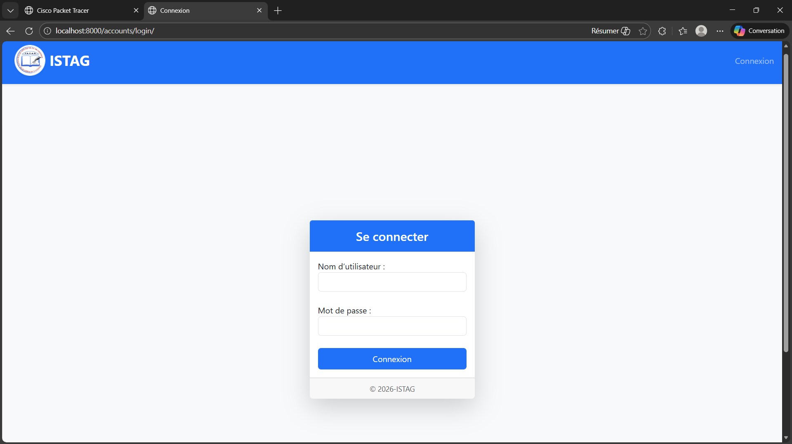
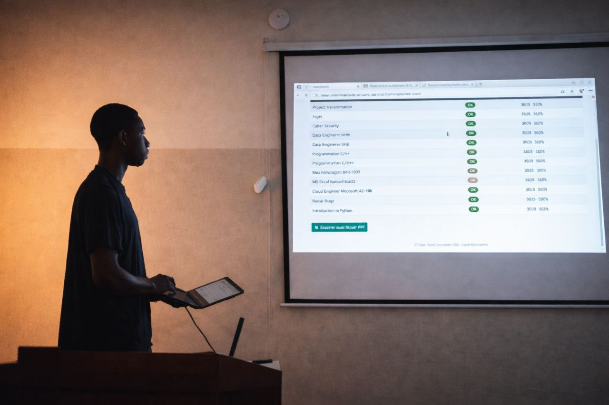
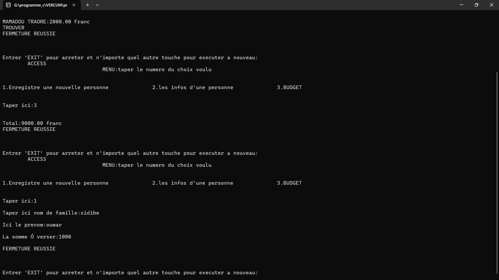
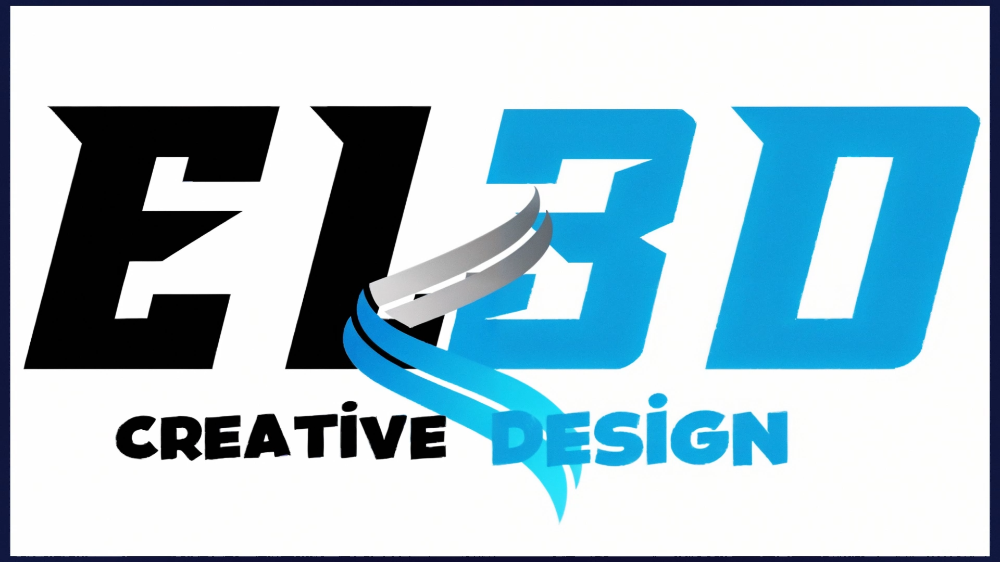
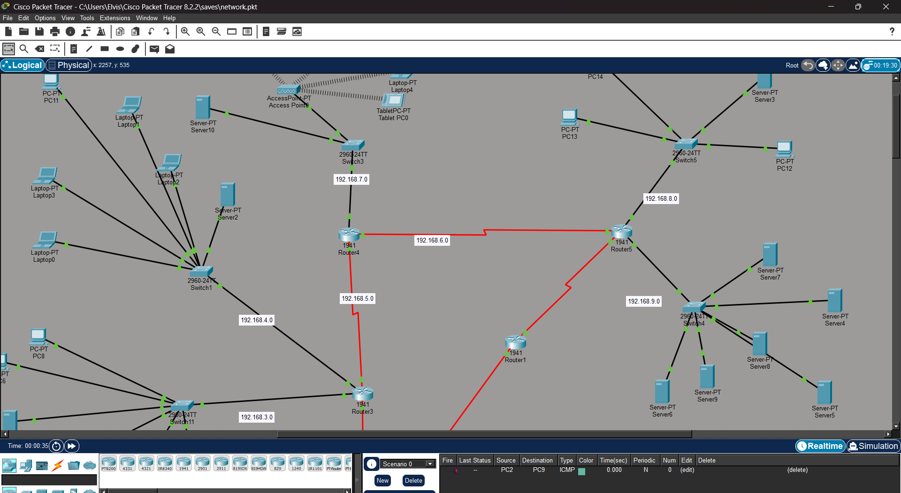
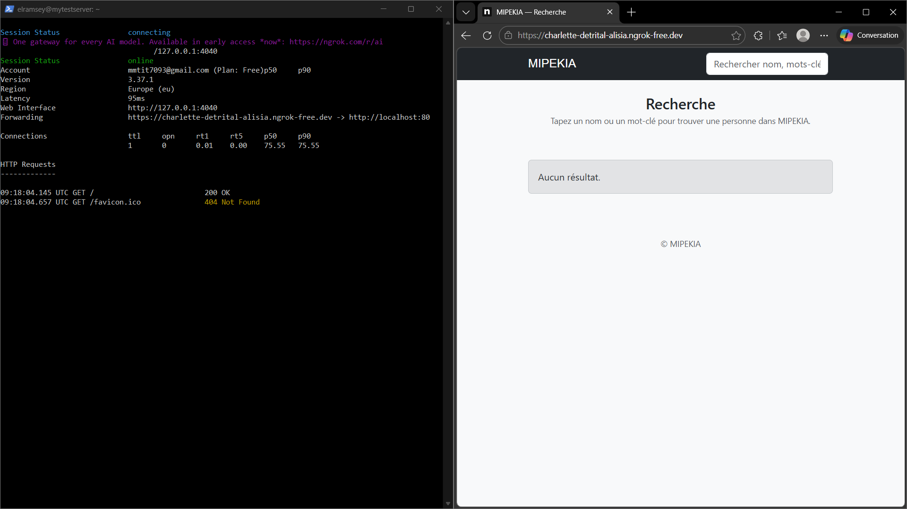
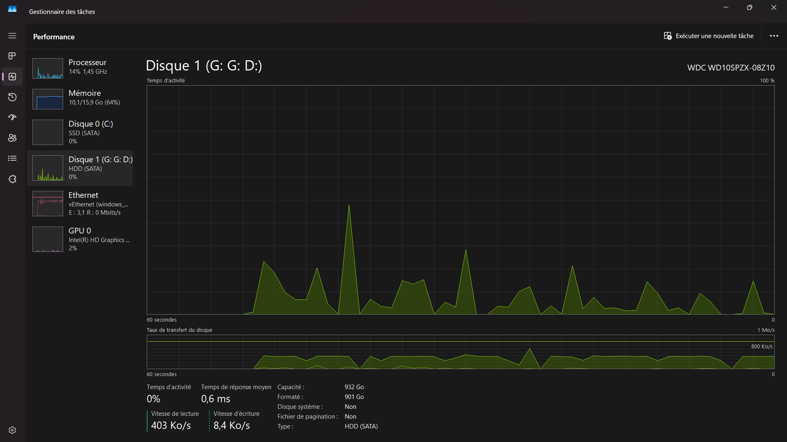

Bonjour, je suis Mamadou Modibo Traoré
Développeur web & desktop, administrateur systèmes/réseaux, et créatif 2D/3D — je conçois des solutions fiables et esthétiques, optimisées pour la production et l'usage professionnel.
- Localisation : Mali
- Disponibilité : Ouvert aux opportunités

Projets sélectionnés
Exemples représentatifs de mes réalisations techniques et créatives. Cliquez sur "Voir" pour un résumé.

Logiciels console (C)

Arts visuels — 2D / Motion
3D — Modélisation & texturing

Admin Systèmes / Réseaux

MiniWiki — mini-encyclopédie
